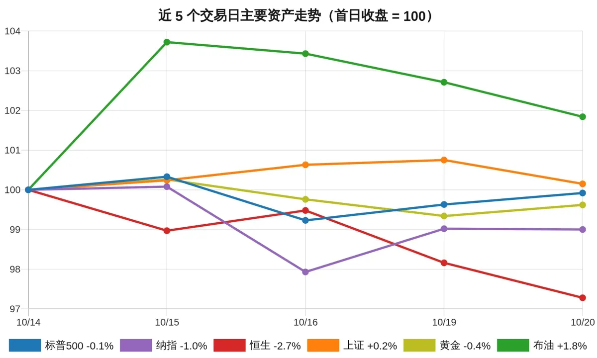

环球要闻BBC / 卫报 / 金融时报 / 南华早报 / 路透社 / 美联社全球
普京会见美特使，俄释放74岁美国公民
俄罗斯释放了74岁美国公民斯蒂芬·哈伯德（Stephen Hubbard），普京在圣彼得堡会见美国总统特使威特科夫时宣布，哈伯德已被送往普尔科沃机场。特朗普随后称这位前教师“正在回家路上”，并表示“不需要交换”。哈伯德2024年被判近七年监禁，美方此前将其列为“错误拘留”。据卫报报道，此次是俄方单方面释放，而非换囚。
2026-10-21 · 环球要闻 · 每日精选

以 5 个交易日前的收盘价为 100，比较股市、黄金与原油的累计涨跌：标普500−0.1%，纳指−1.0%，恒生−2.7%，上证+0.2%，黄金−0.4%，布油+1.8%。数据来源：Yahoo Finance（各市场按当地交易日收盘价）。
俄罗斯释放了74岁美国公民斯蒂芬·哈伯德（Stephen Hubbard），普京在圣彼得堡会见美国总统特使威特科夫时宣布，哈伯德已被送往普尔科沃机场。特朗普随后称这位前教师“正在回家路上”，并表示“不需要交换”。哈伯德2024年被判近七年监禁，美方此前将其列为“错误拘留”。据卫报报道，此次是俄方单方面释放，而非换囚。
法国总统马克龙在多哈对记者表示，不会允许任何人在反对高生活成本的抗议中“制造混乱”，并称将在周六抗议前会见法国情报部门。他说目前没有看到“外国干预”的证据，但警告事后存在“外国对信息的操纵”。据半岛电视台报道，上周六法国各地逾50万人集会，至少2500人被捕。马克龙还批评包括外国领导人在内的“不可接受甚至愚蠢的言论”。
苏丹与南苏丹存在争议的阿卜耶伊地区一处市场遭无人机袭击，造成至少153人死亡。阿卜耶伊行政当局代理新闻部长约汉纳·阿科尔·恩戈尔周二对路透社表示，袭击发生在前一天，目标是阿卜耶伊镇以北的阿米耶特市场，他指责苏丹军方发动袭击，并称现场大火仍在燃烧、死亡人数可能上升。据BBC报道，有消息称死亡人数超过300人，其中包括数十名前往参加葬礼的人。
澳大利亚独立议员海伦·海恩斯（Helen Haines）在选区办公室外遭汽车冲撞后，双腿已被截肢。其丈夫菲尔·海恩斯周三在墨尔本表示，妻子伤势严重但“心脏和头脑状况良好”，“好消息是她还活着”。据卫报报道，医生曾试图保住她的右腿但未能成功。43岁嫌疑人布伦丹·纽金特周三首次出庭，面临三项指控，未申请保释，警方称可能追加包括谋杀未遂在内的指控。
尼日利亚卫生部表示，首都阿布贾确诊一例埃博拉病例，患者为一名从乌干达抵达的妇女。卫生部长穆罕默德·帕特称，当局已开始追踪44名密切接触者。据卫报报道，该妇女10月7日开始出现症状，四天后入院。乌干达卫生部称患者仅经乌干达过境，乌干达“没有确诊的活跃埃博拉病例”。非洲疾控中心主任卡塞亚称病死率接近50%，此次疫情已成为史上地理范围最广的一次。
英国宣布将部署皇家空军台风战斗机，帮助沙特阿拉伯防御也门胡塞武装的导弹和无人机袭击。英国国防部表示，这些战机只承担“防御角色”，不会对胡塞武装发动进攻性打击。据卫报报道，本月胡塞武装袭击沙特，一枚导弹击中利雅得哈立德国王国际机场，造成13人死亡；周一针对也门政府训练营的导弹袭击死亡人数升至73人。国防大臣斯特里廷称，英国是在“回应保护平民”。
加拿大阿尔伯塔省就是否启动独立进程举行公投，选民以压倒性多数否决该提案。据阿尔伯塔选举机构非官方结果，在近190万张选票中，约76%支持留在加拿大，24%支持启动分离进程。总理卡尼表示“阿尔伯塔人做出了明确选择，他们选择了团结”。分离运动领导人基思·威尔逊称，至少四分之一的阿尔伯塔人认为该省应得到更好对待。
马斯克表示正在积极考虑将特斯拉与SpaceX合并。他在SpaceX财报电话会上说“我认为这是个好主意吗？是的”，并称两家公司已成立由独立董事组成的特别委员会研究此事，但尚未就交易条款达成一致，也不保证会达成。据BBC报道，特斯拉估值约1.5万亿美元，SpaceX为2万亿美元，合并将成为史上最大并购之一。
据纽约时报报道，在美国国土安全部下令移除并禁用中国公司深度求索（DeepSeek）开发的产品后，中方对此作出批评。美联社报道称，中国为深度求索辩护，反对美国将其人工智能产品排除在政府系统之外。
谷歌云表示，已解决其英国云站点故障，该故障导致英国银行、企业和法院的服务中断。公司称伦敦数据中心“europe-west2”区域周二早间出现“多项服务问题”，原因是其中一个较小数据中心区域发生“电力事件”。据BBC报道，Revolut、劳埃德银行和汇丰银行等确认周二上午出现中断，谷歌云已向受影响者致歉。
使用PHP编程语言的组织被要求当天安装重要软件更新，否则应考虑将网站下线。据BBC报道，PHP存在两个严重漏洞，PHP基金会周三下午发布修复更新。英国国家网络安全中心以及欧盟和澳大利亚的对应机构敦促用户尽快应用修复。荷兰网络安全机构表示将因漏洞下线其网站，荷兰公共卫生与环境研究院及议会下院网站已无法访问。
法国基准十年期国债收益率首次自2002年以来触及5%。据金融时报报道，对公共财政和政治稳定的担忧推动该收益率从2月底的3.2%一路攀升。彭博社称，能源价格上涨加剧了市场对法国财政前景的担忧，风险指标同步走高。路透社报道称，法债借贷成本升至24年高位。
英国通胀和政府借贷周三双双升至一年来最高，加大财政大臣希利在下周首份预算前的压力。截至9月的一年英国通胀率升至3.5%，高于8月的3.1%，主要受汽油和柴油价格大幅上涨推动。据BBC报道，9月政府借贷升至近250亿英镑，本财年迄今借贷比官方预测高出60亿英镑。
据彭博社报道，在SpaceX和超微电脑公布稳健业绩后，美国股指期货周三上涨，强化了市场对人工智能交易的乐观看法，接下来关注Meta等科技巨头财报。路透社称，纳斯达克期货领涨。另据CNA报道，道琼斯指数周二上涨1%，跑赢标普500指数，医疗保健股领涨。
据CNA报道，奈飞（Netflix）股价周三盘前下跌6%，公司利润和广告业务展望平淡，加深了投资者对其观看量和收入增长的担忧。路透社报道称，疲弱的利润和广告前景加剧了投资者的焦虑。奈飞联席首席执行官萨兰多斯在业绩发布后表示“我们本可以做得更好”。
换个词，再找找。